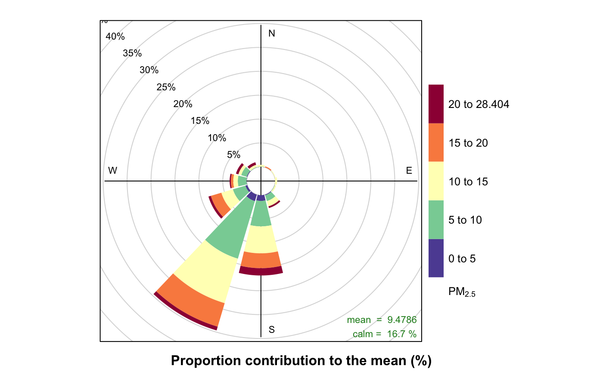
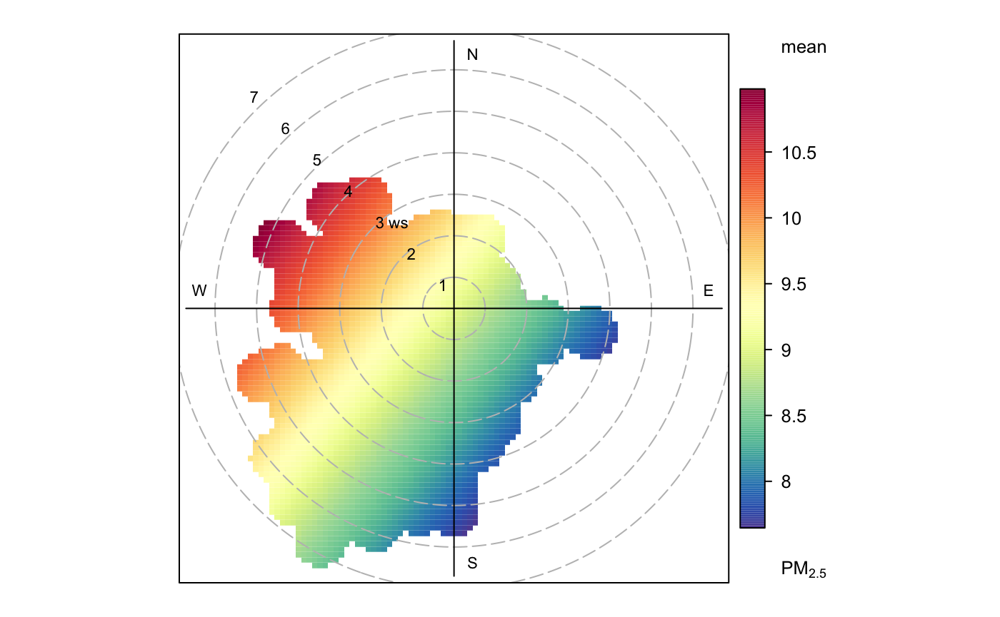

vignettes/working_with_wind_data.Rmd
working_with_wind_data.RmdWind speed and direction are required to generate rose plots or polar plots for PM2.5. Loading this data is made easy using the worldmet R package which makes accessible over 35,000 NOAA measurement sites, many of which are located close to South Coast monitors.
In this example we’ll be generating plots for Seal Beach during the period between July 1st and 7th, 2019. We’ll first need to locate a NOAA site that is reasonably close to our sensor, and this can be quickly done by looking at a map of sites from the worldmet::getMeta() function:
Now we can zoom in to Long Beach to find our communtity and a nearby NOAA site. The “LOS ALAMITOS AAF AIRPORT” looks like the closest choice to Leisure World–just about 4km away. Clicking on its icon shows site information including its unique code 722975-53141.
Now we can use the worldmet::importNOAA() function to load in all of the site readings by providing the site code we just found and the year of interest.
(By default this function runs in parallel, but this parameter must be set to false to run in the vignette)
# Always specify a timezone wherever possible!
timezone <- "America/Los_Angeles"
# Define the timeframe.
start <- lubridate::ymd("2019-06-01", tz = timezone)
end <- lubridate::ymd("2019-06-30", tz = timezone)
# Load Los Alamitos Airport site data for the timeframe.
siteData <- worldmet::importNOAA(code = "722975-53141",
year = 2019,
parallel = FALSE)
names(siteData)## [1] "date" "usaf" "wban" "code" "station"
## [6] "lat" "lon" "elev" "wd" "ws"
## [11] "ceil_hgt" "visibility" "air_temp" "dew_point" "atmos_pres"
## [16] "RH" "cl_1" "cl_1_height" "cl_2" "cl_2_height"
## [21] "cl_3" "cl_3_height" "cl"The rose plot and polar plot functions require a dataframe with only date, wd, and ws, so let’s subset these site readings for just the variables we need in our timeframe (not the whole year!):
windData <-
dplyr::select(siteData, c("date", "wd", "ws")) %>%
dplyr::filter(date >= start, date < end)And now we can generate rose and polar plots with our wind data and a sensor object in the same timeframe.
setArchiveBaseUrl("http://smoke.mazamascience.com/data/PurpleAir")
sensor <-
AirSensor::sensor_load(startdate = start, enddate = end) %>%
AirSensor::sensor_filterMeta(monitorID == "SCSB_02")
AirSensor::sensor_pollutionRose(sensor, windData, statistic = "prop.mean")
